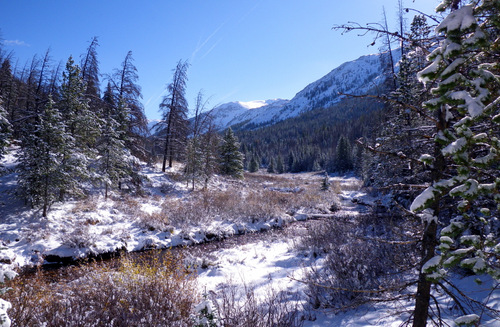
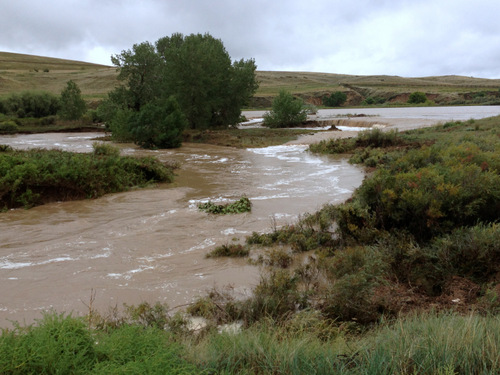
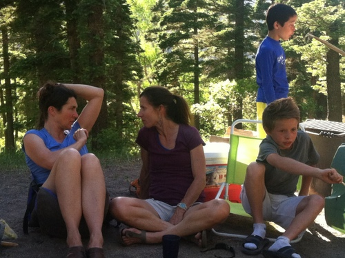
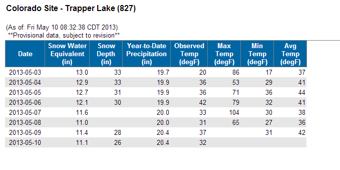
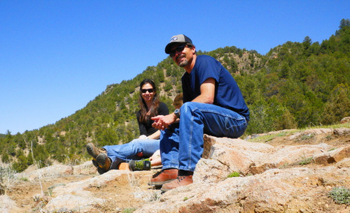
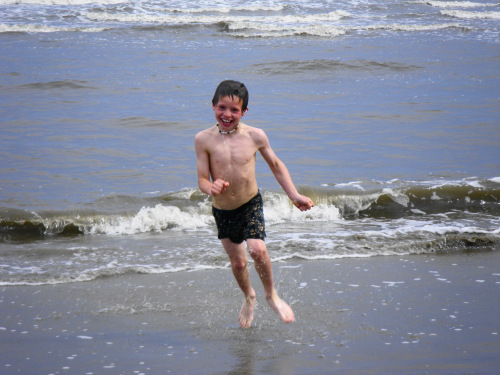

Welcome to farling.com
Winter is here!
We're getting the first real dose of Winter in years.
Happy Thanksgiving!
We spent the holiday in the Utah desert.Freezing fog made for some unusual scenery.
Erie Tigers Wrestling
Erie Tigers are looking good this season!Jacob is undefeated so far, with 5 pins.
Fall Color
Spectacular Fall conditions on the N.Platte!Happy Halloween!
The Holiday Season has begun.5th grade school photo
2013 Lafayette Bobcats
Drift boat project
Some before and after images of the Hyde drift boat I restored.

Fall Color
The rain finally stopped, and we're now into peak Fall colors.

100yr Flood
The rain has finally stopped, after dropping 14"+.All records have been shattered- most rain/highest river levels/etc...
We got off completely unscathed, but the same cannot be said for what I suspect will be many 1000's of other property owners.

Andros Island
I spent a long weekend in the Carribean.Nice to be back on the beach!
Back to School!
Jacob and Beth are back in school.Beth started her new position, and Jacob is back at Red Hawk- 5th grade.
Football season is underway for the Bobcats!
I made the hike in to Frozen Lake last week.
Happy Birthday, Anniversary, Football Season, End of Summer!
The first week of August pretty much concludes the Summer for us...We've celebrated our wedding anniversary (13yrs), my birthday, and Jacob's birthday.
Bob and Paulette (aka Grammy/Pappy) have been visiting, football practice has started for Jacob, and school starts up for Beth and Jacob next week.


Summer Wrap Up
What a busy past few weeks!Jacob flew to PA (solo) for a visit with all the PA relatives.
Next, he and Beth flew to NH for a wedding and a week of visiting relatives.
Now, he's started football practice (every day). Beth is getting ready to start her new teaching job, and Summer vacation is pretty much over for those 2.
4th of July in Yellowstone
We just returned from a family camping/fishing/floating vacation in Wyoming (Yellowstone/Tetons).Headed up to Cody and floated the North Fork and the Shoshone River, then over to the Tetons and the Snake River.
Lastly, we followed the course of Greys River through the Wyoming Range- 84 miles of dirt road.
Fathers Day
A week in the San Juans with Barbara and Bill has come and gone.Summer is in full swing!
Rivers have peaked and are now on the drop.
Matt and I got the last ski of the year in.
Jacob will going on his first solo flight across the country...visiting his grandparents in PA.
Beth and I will be headed to Sothern CO to float some rivers and fish dry flies.

School is out for Summer!
The first trip of the Summer is now complete...South Park, Arkansas River, Salida, Blue Mesa, Gunnison Gorge and some late night auto stress.


Gheenoe
Loving my new boat!My restoration is complete...1987 Gheenoe 13, with a new motor and trailer.

Carping
We've finally shifted out of the weekly snowstorm pattern that's been the norm for the last month.Plenty of water for Northern CO this year, but the Southern part of the state is still in a drought.
Two more weeks of school, and Jake and Beth will be off for the Summer.

Colorado River
We spent the weekend on the Upper CO River- below Gore Canyon.The scenery and weather were fantastic!

Closing Day, Eldora 2013
Closing day was Sunday, and the resort season ended on a high note- over a foot of new snow!We had a fine day of Spring skiing...lots of snow, and no crowds.
Jacob made his double black diamond debut, and we all got some sweet turns in.
Grand Isle, Louisiana
Beth, Jacob and I made a little Spring Break "scouting" trip to Louisiana this week.We flew into New Orleans, rented a car, and headed 2 hours South to the Grand Isle and Bayou Lafourche area.
The beaches, bayous, wildlife and food were fantastic.
I'm looking forward to spending more time in this area!


North Fork Shoshone River
My Spring pilgrimage to the North Fork is complete. The Shoshone proper is fishing ridiculously well. Where else can you go in March and fish dries all day? The hogs in Newton Lake have fared the Winter well, and were stupid for midges. Despite what appeared to be perfect conditions, the “bulls” have not run, and I had to go to the lake to get them.
Eldora
We're finally getting some snow. Too little, too late, but we're thankful for every flake!
Met up with Matt, Derria, Adia, and Mataya on Sunday.
The girls are tearing it up!
Fremont Canyon
Spring is attempting arrival on the North Platte River.
The rainbows are not quite "eggy", but pretty close.
Flushing flows are scheduled for March 22-31.
Noah Asher Hengst

Congratulations to Suzie and Dan on the healthy arrival of their son Noah!
State of the snowpack...not quite dismal.
Thompson Valley Wrestling Tournament
Last matches for the Tigers...Jacob was 2-0.
Rudy and Jacob both finished up undefeated.
Regional Championships
Regional state qualifiers were at Fort Lupton HS this weekend. Jake got some great experience and a big slice of "humble pie".
The knuckle draggers
Jacob, Abi, Zuru and David...making plans at Eldora.

The hot dog- Zuru

Jacob